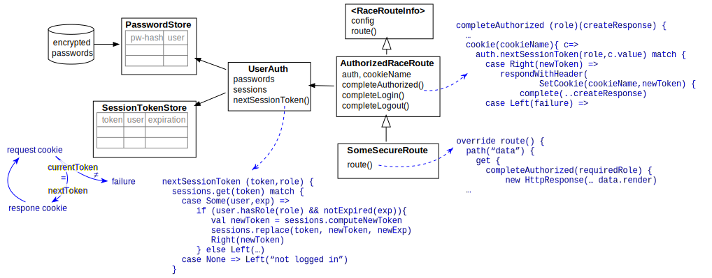

HttpServer
One of the use cases of RACE is to analyze large data streams and make results available online,
i.e. outside of RACE. To support external clients RACE includes the gov.nasa.race.http.HttpServer,
which is a low- to mid-level traffic web server that can be configured with RaceRouteInfo objects,
to turn data received from RACE channels into web content and map it to URIs, supporting dynamic refresh,
user authentication, logging and more.
To that end HttpServer has two major functions:
- routing - mapping trees of URIs to content and http methods)
- content management - creating and retrieving web content
For routing HttpServer leans heavily on the AkkaHttp library, which provides a full
DSL to hierarchically define URI systems with interspersed processing elements such as
HTTP method matchers, cookie checks and path combinators. The DSL itself is beyond the scope of this
document,nhere we just note that each configured RaceRoutInfo can provide its own route()
method that returns a akka.http.scaladsl.server.Route object.

RaceRouteInfo is the construct that ties data acquisition, content creation and content/route
association together. Each HttpServer instance can be configured with any number of
RaceRouteInfo objects, which in turn can have their own configuration parameters. The design is
similar to RaceViewerActor and RaceLayerInfos (see WorldWind Viewer).
Data acquisition required to generate query responses is handled through dedicated actors that are
associated with their corresponding RaceRouteInfos. Such actors extend SubscribingRaceActor
and turn data received from the subscribed channels into HttpContent objects (aggregation of
HTML page and associated resources such as images etc.). The HttpContent is stored in
RaceRouteInfo and referenced from within its route() method to generate the response for
valid HTTP requests.
There is no restriction what type of content can be supported by RaceRouteInfos (html, json
etc.). For HTML content creation we use the ScalaTags library, which provides a DSL that supports
procedural elements in a tree that is very close to the created HTML structure. Akka-http also
supports bi-directional communication by means of WebSockets.
The gov.nasa.race.http.Test{RouteInfo,Authorized,Refresh} examples show how define routes and
(self refreshing) HTML content.:
//--- basic RaceRouteInfo example
class TestRouteInfo (val parent: ParentContext, val config: Config) extends RaceRouteInfo {
val request = config.getStringOrElse("request", "test")
val response = config.getStringOrElse("response", "Hello from RACE")
override def route = {
path(request) {
get {
complete(HttpEntity(ContentTypes.`text/html(UTF-8)`, response))
}
}
}
}
//--- example of how to implement authorized content for configured paths
class TestAuthorized (val parent: ParentContext, val config: Config) extends AuthorizedRaceRoute {
val request = config.getStringOrElse("request", "secret")
var count = 0
def page = html(
body(
nid(s"the supersecret answer #$count to the ultimate question of life, the universe and everything is:"),
nid(b("42")),
nid("(I always knew there was something wrong with the universe)"),
logoutLink
)
)
override def route = {
path(request) {
get {
count += 1
completeAuthorized(User.UserRole, HttpEntity(ContentTypes.`text/html(UTF-8)`, page.render))
}
}
}
}Encrypted Content
HttpServer can be configured to use the HTTPS protocol for server authentication and
content encryption:
...
use-https = true
server-keystore = "??server.keystore"
server-keystore-pw = "??server.pw"
...If use-https is set a valid X.509 certificate keystore has to be provided, which can for
instance be generated by means of the JDK keytool. Location path and passphrase values should be kept
in a vault (see Encrypted Configurations) like this:
...
server {
keystore="../cert/localhost.jks"
pw="mysupersecretpassphrase"
...
}For testing purposes a keystore can be created by running the script/gen-server-cert.sh script.
To generate a self-signed CA certificate we provide script/gen-ca-cert.sh.
User Authentication
If content requires user authentication the respective RaceRouteInfo can be derived from
AuthorizedRaceRoute or AutoAuthorizedRaceRoute, which both provide a completeAuthorized
directive that is used instead of complete when defining the route:
...
override def route = {
get {
path("secretData") {
completeAuthorized(User.UserRole){
generateResponse
}
}
}
}AuthorizedRaceRoute is used for interactive clients and automatically redirects to/from a
login web page the first time the content is accessed. AutoAuthorizedRaceRoute is for automated,
non-interactive web clients and requires explicit login/logout requests from the client application.
User authentication is done by means of challenge/response cookies, i.e. after successful user
login HttpServer transmits a cookie in the response (via Set-Cookie header) that has to
be included in the next request from the client. Each accepted response yields a new cookie value,
i.e. each cookie is only good for the next request and is not permanently stored on the client side:

A session cookie can also have an expiration date after which the HttpServer will reject it.
User authentication requires an additional user-auth route configuration option to specify the
respective password store to use:
...
use-https = true
server-keystore = "??server.keystore"
server-keystore-pw = "??server.pw"
routes = [
...
{ name = "secretData"
class = "gov.nasa.race.http.TestAutoAuthorized"
request = "secretData"
user-auth = "??server.users"
}
]Again, the value for this option should be kept in a encrypted config. Since the password is transmitted in the login request data respective routes have to use https.
This user authentication protocol is also supported by the HttpImportActor
WebSocket Support
RaceRoutes support the WebSocketAPI by means of a number of the PushWSRaceRoute, ProtocolWSRaceRoute and
AuthorizedWSRoute which provide a promoteToWebSocket() method that can be used from within concrete route()
implementations like this:
...
override def route = {
get {
path("ws") {
promoteToWebSocket
}
}
}RACE web sockets come in two flavors: push mode and protocol mode:
Push mode sends the same data to all connected clients, supporting per-client initialization by means of overriding
a initializeConnection() method in respective route implementations, which mix in PushWSRaceRoute and normally
use associated DataConsumerRaceActors to collect data to publish from configured RACE channels. Such actors use
the PushWSRaceRoute.setData() method to initiate publishing. Note that this method has to take care of proper
synchronization in case the data to be pushed is not invariant as the actor and the route object execute in different
threads. It is up to individual routes to decide where/if RACE data gets translated into published content (such
as HTML documents), but convention is to use invariant, representation agnostic data as setData() arguments.
perform the translation once in the respective RaceRouteInfo from within that setData() implementation and then
serve that cached content from within the route() implementation
In protocol mode the server route responds individually to client requests that are issued as messages sent through
an established web socket connection. The route implementation has to provide a handleMessage partial function that
defines the protocol. A simple echo service works like this:
...
override protected val handleMessage: PartialFunction[Message,Iterable[Message]] = {
case tm: TextMessage.Strict =>
val msgText = tm.text
TextMessage(Source.single(s"Echo [$msgText]")) :: Nil
}Serving Mixed Static and Dynamic Content
The SiteRoute and AuthorizedSiteRoute traits can be used to serve content that uses a mix of dynamic
(RACE-generated) and static (externally generated) data stored in the file system. The configuration looks like this:
...
actors = [...
{ name = "httpServer"
class = "gov.nasa.race.http.HttpServer"
host = "localhost"
port = "8080"
routes = [
{ name = "tabdata"
class = "gov.nasa.race.http.tabdata.TabDataService" // SiteRoute implementor
request-prefix = "tabdata" // URL path prefix for requests
node-root = "race-net-http-test/src/resources/sites/tabdata" // root dir of static content
...The node-root directly points to the root dir where respective route files can be found, to support
configurations that serve content kept outside of RACE. Note that request-prefix (which defaults to the name
value) and node-root can be different.
Test Routes
To test network connection and client compatibility the race-net-http module provides a number of generic
RacRouteInfo examples:
TestRouteInfoserves a single configurable response in response to a GET. Clients can be browsers or command line utilities such ascurl. Thehttp-server.confconfiguration shows how to use this route (viahttps://localhost:8080/hellorequests)TestAuthorizedis an example that requires interactive user authentication by means of a browser client. The server will automatically respond with a login dialog the first time the user requests that page. Thehttp-server.confincludes ahttps://localhost:8080/secretroute to demonstrate.TestPreAuthorizedrequires automated login via a POST with respective user credentials before accessing the content. Usehttp-server.conftogether with agov.nasa.race.http.HttpImportActor(e.g.preauth-client.conf) to runTestPusherandTestAuthorizedPusherare websocket examples to be used with thews-server.confandws-auth-server.confconfigurations. The first one can be used with a web socket command line client such aswscat, the second one requires a browser to enter user credentials. As the names imply both examples push data from RACE to all connected clientsEchoService(andws-echo,conf) is an examples that shows how to use connection specific request/response, as opposed to push mode which sends the same data to all connected clientsTabDataServiceis the most comprehensive example that shows how to use RACE to serve a node which uses websockets to push dynamic data to connected clients. This works with normal browser clients (using http)